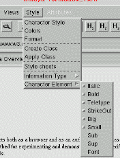

ThotLib V4
Date: June, 2002
The Thot application generation language enables applications based on the active document concept. An active document is an electronic document which transforms itself or acts on its computing environment when certain editing commands are issued by the user. This concept is used to build different types of applications including access to databases, user interface construction and technical document processing.
The Thot application generation language is used to define a graphic interface (a set of menus) to which the application designer can associate functions. These functions are either Thot standard functions or new specific functions.
The language and its associated mechanisms also allow application designers to modify or extend standard Thot editing functions. The application can receive control during the execution of a standard function, by asking for an event. These events are also specified in the application generation language.
Consequently, an application is constituted by two different sets of functions:
Commands and actions can use the Thot API in order to modify the documents being handled (refer to The Thot Tool Kit API)
Application generation is based on application schemas written in
a specific language, the A language. Menus and associated specific
commands are declared in the main application schema, called
EDITOR.A. This application schema can refer to other application
schemas that define shared components reusable in different applications.
These application schemas are based on a generic logical structure and are
related to a structure schema. These application schemas have the same name
as the corresponding structure schema and the .A suffix.
The EDITOR.A application schema defines the menus of the main
window (if this main window exists) and those attached to the menu bar of
each document window. The app application allows one to define different
menus for different document types (identified by their structure names). For
a specific document type, menus can differ form one view to another (the
range in presentation schema identified the view when the menu is specific to
one view).
The application schema associates a command with each item in these menus. Each item is located within a menu or a cascade submenu of a menu. The cascade is limited to one level.
When the user selects a menu item, the corresponding command is called, with the current document and view as parameters.
There are different menu sections in the EDITOR.A application
schema:
An event is raised by the editor whenever a Thot standard editing command perform some treatment that the application needs to complement or replace. For example, an event can be raised when the user selects an element, modifies a character string, creates or deletes a logical element, associates an attribute with an element, opens or closes a document view, saves a document, etc.
Only standard editing commands raise events. Specific commands associated with menu items in an application schema do not raise any event.
Each event raised by Thot is associated with the object concerned by the Thot editing command that triggers the event: element, attribute, view, document, etc.
Whenever an event is raised, Thot calls the corresponding actions that is associated with the event and the corresponding object in the application schemas in use.
The user and the programs (commands and actions) can access the same functions, but through different interfaces: standard Thot commands for the user, API for programs. The operations performed on documents by an application programs using the Thot API do not create events. However, there are some exceptions to this rule; they are mentioned below.
The Thot standard editing commands generally produce two events with the same name but with different suffixes:
True is returned by the action), the
editor does not perform the normal processing.When an action performed on a .Pre event has replaced the normal processing of the standard command, there is no corresponding .Post event since the editor has not processed the command.
Each time an action of the application is called by an event, it receives a context as a parameter, which allows the application to identify the conditions in which the event has been raised. This context varies from an event to the other because it only provides information significant for the event in question.
Here is a list of all items that can be found in the context (for each event, only a subset of this list is present):
Section 5 lists all the events that can be raised, with the name of the event, the parameters received by the action which handles this event and the conditions in which it is raised.
Application generation is based application schemas written in a
specific language, the A language. Menus and associated specific
commands are declared in the main application schema, EDITOR.A.
This application schema can refer to other application schemas related to
different structure schemas.
Any application schema starts with the APPLICATION keyword followed by the EDITOR word or the structure schema name.
The main application schema of the application contains two sections that do not appear in other application schemas.
EDITOR.A schema and appears at the end of the schema.Three other sections can appear in any application schema: DEFAULT, ELEMENTS and ATTRIBUTES. These sections are optional but at least one of them must be present in an application schema associated with a structure schema.
The schema must end with the END keyword.
ASchema = 'APPLICATION' ElemIdent ';'
[ 'USES' SchemaAndModules ]
[ 'DEFAULT' EvtActionList ]
[ 'ELEMENTS' < ElemActionList > ]
[ 'ATTRIBUTES' < AttrActionList > ]
[ 'MENUS' Menus ]
'END' .
A single application can use several application schemas: one per
structure schema for which specific commands or actions must be performed
(for instance, Report and Paragraph) and one general application schema (the
EDITOR schema). When an event is raised for a given element, the editor
consults first the application schema of the structure defining this element
in order to check whether an action has been attached to this event. If it is
not the case, the editor consults sequentially the application schemas of the
parent elements and finally the EDITOR application schema.
The EDITOR.A schema lists the names of other application
schemas involved in the application, in its USES section. The A compiler uses
this list to load the corresponding commands and actions.
The USES section lists also all the modules needed by the application.
SchemasAndModules = SchemaOrModule < ',' SchemaOrModule > ';' . SchemaOrModule = DocumentType | Module .
The Thot library provides optional modules which can be used or not by an application. As an example, a document reader application does not need editing functions. The USES section allows application developer to explicitly load the needed Thot modules. The available modules are:
XLookupString function that allows users to insert composed
characters into Motif widget.The MENUS section defines the menus contituting a menu bar (see example in 7):
Main Window section is optional. It defines the menu
bar of the main window.Document Windows section is mandatory. It defines the
menu bar of all document windows.Structure_name Windows sections
are optional. They specify the menu bar for specific document types.Menus = [ 'Main' 'Window' ':' MenuList ]
[ 'Document' 'Windows' ':' MenuList ]
< DocumentType 'Windows' ':' MenuList > .
MenuList = 'BEGIN' NewMenu < NewMenu > 'END' ';' /
NewMenu .
NewMenu = [ 'view' ':' ViewNum ] MenuIdent
[ '.' SubmenuIdent] [ ItemCascade ] ';' .
ItemCascade = 'Separator' / 'Button' ':' ItemAction /
'Toggle' ':' ItemAction /
'Dynamic' ':' ItemIdent .
ItemAction = ItemIdent '->' ActionIdent .
DocumentType = NAME .
MenuIdent = NAME .
SubmenuIdent = NAME .
ItemIdent = NAME .
IdentAction = NAME .
For each menu item, the application schema associates a specific command, except for the standard menus, composed by the Thot editor. For these menus neither items nor actions have to be specified. There are two such menus: "Attributes_" and "Selection_".
The Thot toolkit allows application designers to declare one-level cascade menus (menu and submenu).
A menu item can be:
The Thot toolkit is designed to support multilingual dialogue. Names of
menus, submenus and menu items declared in the application schema are
considered as generic names. When the application starts, the editor looks
for a dialogue table:
config/$LANG-'name'dialogue ('name' represents the application name)
to substitute generic names by localized name adapted to the current language
$LANG.
The A compiler automatically generates a EDITORdialogue file
that can be used as a model to construct dialogue tables for each supported
language.
Actions that must be executed when certain events are raised, are specified in sections DEFAULT, ELEMENTS and ATTRIBUTES. Association of actions with events is simply expressed by the name of the event (see the list of events in section 5) followed by an arrow (the two characters '-' and '>') and the name of the action.
The name of the event contains the suffix .Pre or .Post depending on whether the action must be performed before or after normal processing by the editor. If no suffix is present the event is assumed to have the .Pre suffix.
The name of the action is the name of the procedure written by the programmer and called by the event.
EvtAction = EvtIdent [ '.' PostPre ] '->' ActionIdent ';' . PostPre = 'Post' / 'Pre' . EvtIdent = NAME . ActionIdent = NAME .
The DEFAULT section includes the event/action associations which, by default, apply to all element types and all the attributes defined in the structure schema corresponding to the application schema.
For a given element type and for a given event, when the ELEMENTS section does not contain an event/action association, the association of the DEFAULT section is taken into account if it exits. The DEFAULT section can be absent. It can also contain only a subset of the events listed in section 5. When the ELEMENTS section for a given element type and the DEFAULT section do not define any action for a given event, this event has no effect for the elements of that type.
The same principle applies to attributes: the DEFAULT section specifies the event/action associations which apply to all attributes for which the ATTRIBUTE section does not include these events.
The DEFAULT section is composed of the DEFAULT keyword followed by an event/action association, if there is a single default association, or by a sequence of associations between the keywords BEGIN and END, if there are several. The END keyword must be followed by a semicolon. The event/action associations can be either for element types (see section 2.5) or for attributes (see section 2.6).
'DEFAULT' EvtActionList
EvtActionList = EvtAction /
'BEGIN' EvtAction < EvtAction > 'END' ';' .
The actions to be called for elements of a given type are defined in the ELEMENTS section. In this section, the name of each element type requiring actions is followed by a colon and by the event/action association to be applied (if there is only one) or the list of associations (if there are several) between the keywords BEGIN and END. The END keyword is followed by a semicolon.
In the case where the element type is a mark pair, but only in this case, the type name can be preceded by the keywords First or Second. These keywords indicate whether the associations that follow apply to the first or second mark of the pair.
Each event/action association for an element type is composed in the same way as described in section 2.3.
'ELEMENTS' < ElemActionList >
ElemActionList = ElemActions < ElemActions > .
ElemActions = [ FirstSec ] ElemIdent ':' EvtActionList .
FirstSec = 'First' / 'Second' .
ElemIdent = NAME .
EvtActionList = EvtAction /
'BEGIN' EvtAction < EvtAction > 'END' ';' .
The actions to be called for given attributes are defined in the ATTRIBUTES section. In this section, the name of each attribute requiring actions is followed by a colon and by the event/action association to be applied (if there is only one) or the list of associations (if there are several) between the keywords BEGIN and END; the END keyword is followed by a semicolon.
Each event/action association for an attribute is composed in the same way as indicated in section 2.3, but only certain events are allowed for attributes, those beginning with Attr (see section 5.1 for the definition of these events).
'ATTRIBUTES' < AttrActionList > AttrActionList = AttrActions < AttrActions > . AttrActions = AttrIdent ':' EvtActionList . AttrIdent = NAME .
The Thot toolkit provides a set of standard commands. The commands parameters are always the document identification and the view number.
TtcInclude command
presents the same menu as that offered by the TtcInsert
command, i.e. the list of elements that can be created before or after
the selected part. Once you have selected the type and the position of
the copy, click with the left mouse button on the element to be copied.
You can click in any Thot window of a document provided that you click
on an element of the required type. You can move throughout the
document by using the scroll bars in order to display the desired
element before clicking on it.TtcPrintSetup command.The Thot standard commands TtcInsertChar and TtcInsertGraph need an extra parameter: the character to be inserted. These commands can be called by application specific commands, but cannot appear in the menus defined by the application schema EDITOR.A.
It is convenient to be able to invoke menu commands from the keyboard. The Thot toolkit provides a facility that let user accomplish this. When the application starts, the Thot toolkit looks for the keyboard shortcuts file for the application. This file defines a list of associations between a keyboard sequence an the corresponding command.
The syntax used to define association is:
Directive = KeySeq ':' IdentCommand ;
KeysSeq = KeySet [ ',' KeySet ] ;
KeySet = [ Modifier ] [ 'Shift' ] Key ;
Key = '<Key>' KeyValue / '<Key>' SpecialKey ;
Modifier = 'Ctrl' / 'Alt' / 'Meta' ;
KeyValue = 'a' / 'b' / ... ;
SpecialKey = 'Escape' / 'Delete' / 'Space' / 'BackSpace' / 'Return' / 'Up' /
'Down' / 'Left' / 'Right' / 'Home' / 'End' / 'F1' / ... / 'L1' / ... / 'R1' /
... ;
IdentCommand = 'TtcInsertChar(' Char ')' / NAME '()' ;
Char = KeyValue / OctalValue ;
OctalValue = '\' NUMBER ;
An IdentCommand can be either a standard Thot command or an
application specific command. We give below the example of the
amaya.keyboard file.
#Amaya example
Ctrl <Key>1: CreateHeading1()
Ctrl <Key>2: CreateHeading2()
Ctrl <Key>3: CreateHeading3()
Ctrl <Key>Space: TtcInsertChar("\240")
Ctrl <Key>Return: TtcInsertChar("\212")
Ctrl <Key>x , Ctrl <Key>s: SaveDocument()
Ctrl <Key>x , Ctrl <Key>p: TtcPrint()
Ctrl <Key>x , Ctrl <Key>c: TtcCloseDocument()
Ctrl <Key>x , Ctrl <Key>f: TtcSearchText()
Ctrl <Key>c: TtcCopySelection()
Ctrl <Key>y: TtcPaste()
Ctrl <Key>w: TtcCutSelection()
Ctrl <Key>d: TtcDeleteSelection()
<Key>Delete: TtcDeleteSelection()
<Key>Escape: TtcParentElement()
Ctrl <Key>-: TtcChildElement()
Ctrl <Key>a: TtcStartOfLine()
Ctrl <Key>e: TtcEndOfLine()
<Key>Return: TtcCreateElement()
<Key>Home: TtcStartOfLine()
<Key>End: TtcEndOfLine()
Ctrl <Key>b: TtcPreviousElement()
Ctrl <Key>f: TtcNextElement()
<Key>L6: TtcCopyToClipboard()
<Key>L8: TtcPasteFromClipboard()
The keyboard shortcuts file can be located either in the user's
HOME directory or in the bin directory within the
Thot hierarchy.
File paths are:
where 'name' represents the application name.
Events can take two different forms: .Pre or .Post. The actions called by the .Pre events must return a boolean value which is True if the action replaces the standard processing of the editor. The actions called by the .Post events have no return value. The .Pre and .Post forms of the same event generally call the corresponding actions with different parameters.
Events are grouped in several categories depending on the objects to which they are transmitted: attributes, elements, specific presentation rules, documents, views, application.
The following events only appear in the DEFAULT section or in
the ATTRIBUTES section of an application schema.
If they appear in the DEFAULT section, they are raised each
time an attribute of any type is created, modified, deleted, saved or read
(according to the event), whatever the element in question.
In the ATTRIBUTES section, these events are associated with
an attribute type and raised by the editor when attributes of this type are
created, deleted, modified, saved or read (according to the event), whatever
the element in question.
Each attribute's event is accompanied with a pointer to the subsequent structure (this structure is defined in the appaction.h file):
typedef struct {
TTEevent event;
Document document;
Element element;
Attribute attribute;
AttributeType attributeType;
} NotifyAttribute;
element
indicated an attribute of type attributeType. The
attribute field is not filled since the attribute has not yet
been created.AttrCreate.Pre (before
creating the attribute) and AttrModify.Pre (before
requiring the user to assign a value to the attribute).WITH
keyword in the structure schema), do not raise
AttrCreate.Pre event when created.attributeType for the element element.WITH
keyword in the structure schema) do not raise a
AttrCreate.Post event.attribute
for the element in question. The attribute is still attached to the
element and its value is still accessible.attributeType for the indicated element. The attribute
field is not filled since the attribute no longer exists.
attribute of the element element. If the action
returns True, the attribute is not exported in the output
file.attribute of the element element.attributeType for element element. The
attribute field is not filled since the attribute has not yet
been created.
If the action called by the event returns True, the
corresponding item is not included in the menu; if it returns
False, the item is normally included in the menu.
There is no AttrMenu.Post event.
attribute for the element element.attribute for the element element. The
attribute then has the new value.attributeType. The attribute field is
not significant. If the action returns True, the attribute is
not included in the abstract tree. attribute of the element
element. If the action returns True, the
attribute is not written in the file.attribute of the element element.The following events only appear in the DEFAULT or ELEMENTS section of an application schema.
In the DEFAULT section, they are raised as soon as any element is affected by the relevant event.
In the ELEMENTS section, they are associated with an element
type and raised as soon as an element of this type is affected by the
relevant event.
Three different structures can accompany the events on elements (see the
structure specified for each event. These structures are defined in the
appaction.h file):
typedef struct {
TTEevent event;
Document document;
Element element;
ElementType elementType;
int position;
} NotifyElement;
typedef struct {
TTEevent event;
Document document;
Element element;
ElementType elementType;
ElementType targetElementType;
} NotifyOnElementType;
typedef struct {
TTEevent event;
Document document;
Element element;
Element target;
Document targetdocument;
} NotifyOnTarget;
typedef struct {
TTEevent event;
Document document;
Element element;
Element target;
int value;
} NotifyOnValue;
element.
The selection has not already changed. This event is accepted for all
elements (references or not). The position field has no
meaning.element. You can ask the API where the new
selection is if is the ElemSelect event has not been
retrieved. The position field has no meaning.element.
The element has still its old type. The elementType field
indicates the new type that will be given to the element. The
position field has no meaning.element has just changed type. The
elementType field indicates the previous type of the
element. The position field has no meaning.element. The selection was not changed. This event is
accepted for all elements (references or not). The
position field has no meaning.element. The selection was not changed. This event is
accepted for all elements (references or not). The
position field has no meaning.element. The selection was not changed. This event is
accepted for all elements (references or not). The
position field has no meaning.element. The selection was changed. This event is accepted
for all elements (references or not). The position field
has no meaning.element.
It's similar to the Pre event because Thot doesn't do anything for this
event.element contained
in the abstract tree. The position field has no
meaning.TtaSetNotificationMode function of the
API). However, even when the document is in the full notification mode,
the event is only raised for the elements which require it.element has just been copied. It is placed
in the abstract tree. The position field has no
meaning.TtaSetNotificationMode function of the API). However,
even when the document is in the full notification mode, the event is
only raised for the elements which have required it.element will be removed from its abstract
tree if a « Delete » or « Cut » command is issued by the user, or if
the Thot kernel has detected two Text elements that may be merged. This
element is still included in the abstract tree when the event is
raised.
The position field may take different values depending
on the three following cases:
Values of the position field maty be the following:
TTE_STANDARD_DELETE_FIRST_ITEMS: the element is among the first items of the delete sequence: the event delete sequence is not complete, and next event(s) will follow this one.
TTE_STANDARD_DELETE_LAST_ITEM: this is the last item of the delete sequence.
The position field value is: TTE_MERGE_DELETE_ITEM
Value of the position field is: TTE_TOOLKIT_DELETE
When the event must remove a whole subtree, this event can only be
raised for the root of the subtree to be removed or on the contrary, to
each element of this subtree, depending on which notification mode the
document is in (see the TtaSetNotificationMode function of
the API). However, even when the document is in the full notification
mode, the event is only raised for the elements which require it.
elementType, child of element, has
been removed from the abstract tree. The position field
gives the position of the removed element in the list of the children
of element (0 for the first child, 1 for the second,
etc.). If a subtree has been deleted, the event is only raised for the
root of this subtree and not to each element of the subtree, even if
the document is included in the full notification mode.element. The
position field has no meaning. If the action returns
True, the subtree is not exported in the output file.element. The
position field has no meaning.element. This event is only raised when the selection
implies at least two elements. The position field has no
meaning.element. The position field has no
meaning.elementType as the child of the element
element. The position field gives the
position of the element which will be included in the list of the
children of element (0 before the first child, 1 after the
first child, 2 after the second one, etc.).element be up to
date with the value of its source element.
In any case the source element are not accessible (for example when
this is placed in a non loaded document), so the element
target and targetdocument components are equal to
NULL. Otherwise, the element target and
targetdocument point to the source element and document
where this is placed, respectively.
element was up to dated with the value of
element target.element has just been included. The
position field has no meaning.elementType (with its descent) as the
child of the element element. The position
field gives the position of the element that will be created or pasted
(when the user chooses the item of the menu) in the list of the
children of element (0 before the first child or as the
first child if element has no child, 1 after the first child, 2 after
the second one, etc.).ELEMENTS section, it is only raised
when the editor includes in the menu the item regarding an element of
the corresponding type.DEFAULT section, it is raised as
soon as the editor includes an item in the ``Insert'' menu, whatever
the element type in question.ElemMenu.Post event.element. The position field has no
meaning.element has just been surrounded by a new
element. The position field has no meaning.elementType (with its descent) as the child of the element
element. The position field gives the
position of the element which will be created in the list of the
children of element (0 before the first child or as the
first child if the element has no child, 1 after the first child, 2
after the second one, etc.).ELEMENTS section, it is raised only
when the user wants to create an element of the corresponding type.DEFAULT section, it is raised as
soon as the user creates a new element, whatever its type.element has just been created and placed
into the abstract tree of its document. The position field
has no meaning.ELEMENTS section, it is only raised
when the user has created an element of the corresponding type.DEFAULT section, it is raised each
time the user creates a new element, whatever its type.TtaSetNotificationMode
of the API). However, even when the document is included in the full
notification mode, the event is only raised for the elements which
require it.target as the
descendant of the element element. The element
target is not already pasted at the position required by
the user. The value field gives the position of the
element to be pasted in the list of the children of
element (0 before the first child, 1 after the first
child, 2 after the second child, etc.).element has just been pasted. It is placed
into the abstract tree. The position field contains the
document from which the element has been copied or cut.TtaSetNotificationMode function of the API). However,
even when the document is in the full notification mode, the event is
only raised for the elements which have required it.value the contents of the
graphic or symbol leaf target which has an ascendant
element. Element is the element of the type
with which the event is associated. If the event is defined in the
DEFAULT section then element is equal to
target.target which has an ascendant element.elementType which must be the last
child of element. The position field has no
meaning. If the action returns True, the element (and the
whole subtree) is not included in the abstract tree.element and the whole
subtree and has inserted it into the abstract tree. The
position field has no meaning.Element is the element of the type with which
the event is associated.Element is the element of the type with
which the event is associated.element. The
position field has no meaning. If the action returns
True, the subtree is not written in the file.element. The
position field has no meaning.element. The
selection has not been already made. This event is also raised before a
double-click and when the editor follows a hypertext link. The
position field has no meaning.element has just been selected by the user.
The position field has no meaning.element
points to the element target belonging to the
targetdocument document. The link is not already
established and the reference element still points its old target (or
nothing at all). In the ELEMENTS section, this event is
only valid for the elements of type reference (this is checked by the
compiler). If this event is included in the DEFAULT
section, it will only apply to the reference elements. This event is
not accepted in the ATTRIBUTES section even for reference
attributes (see the AttrModify event).element has just changed its
target upon the user's request. It now points to the element
target belonging to the targetdocument
document.Element is the element of the type with which the event is
associated.Element is the element of the type with which the event is
associated.target in the
element element. The element parameter is the
element of the type which has requested the event and which is an
ascendant of the target leaf. The text leaf still has its
previous contents.ELEMENTS section, it is only
raised if one of the ascendants (at any level) of the text leaf in
question has the type with which the event is associated. If several
ascendants require the event, it is raised for each one and first to
the ones at the lowest level.DEFAULT section, it is raised as
soon as any text leaf is affected. In this case, both parameters
element and target have the same value: the
affected text leaf.target
within element element. Several changes can have been made
since the corresponding ElemTextModify.Pre event has been
raised: inserted, pasted, deleted characters, etc. When the event is
raised, the text leaf has its new contents. This event is raised in the
same way as the ElemTextModify.Pre event.targetElementType, and before it tries to change
individually each selected element.
If the event is in the ELEMENTS section, it is raised
only if all the selected elements belong to the corresponding type.
If the event is in the section DEFAULT, it is sent
whatever the type of selected elements is.
If the action called by the event returns True, the editor will not try to change individually the type of selected elements, if it returns False, the editor will try.
There is no ElemTransorm.Post event.
The following events can only appear in the DEFAULT or
ELEMENTS section of an application schema.
In the DEFAULT section, they are raised each time a specific
presentation rule is created, modified or deleted (depending on the event),
whatever the element in question.
In the ELEMENTS section, they are associated with an element
type and raised by the editor when the specific rule concerns an element of
the type in question.
A single type of context is associated with the events for the specific
presentation (this structure is defined in the appaction.h
file):
typedef struct {
TTEevent event;
Document document;
Element element;
PRule pRule;
int pRuleType;
} NotifyPresentation;
typePRule to be added for the element
element. The rule is not already added. The
pRule field has no significant value.pRule rule has just been added to the element
element.pRule specific
presentation rule associated with the element element.pRule
specific presentation rule associated with the element
element.pRule specific presentation
rule associated with the element element.pRuleType associated with the element
element. The pRule field has no significant
value.The following events are intended for documents. They can only appear in
the DEFAULT section of an application schema. If it is an
application schema associated with a type of document, they are raised each
time a document of this type is (respectively) opened, created, closed or
saved. If they are included in the DEFAULT section of the
EDITOR.A schema, these events are raised whatever the type of
document.
Only one type of context accompanies the events for documents. The
view field is not significant for any event on documents (this
structure is defined in the appaction.h file):
typedef struct {
TTEevent event;
Document document;
View view;
} NotifyDialog;
document field already contains the
identifier to be associated with the document if the application
accepts to open it.document field.document field already contains
the identifier to be associated with the document if the application
accepts its creation.document field.document field to be closed. The document is still
open.document field. This document identifier is no longer
used.document field to be saved. The document is not saved
yet.document field.document field to be exported. The document is not
exported yet.document field.The following events are intended for views. They can only appear in the
DEFAULT section of an application schema and concern all views
of a given document (if they are in an application schema associated with
this type of document) or all views of all types of documents (if they are in
the EDITOR.A schema).
Two types of context can accompany the events for views (these structures
are defined in the appaction.h file):
typedef struct {
TTEevent event;
Document document;
View view;
} NotifyDialog;
typedef struct {
TTEevent event;
Document document;
int verticalValue;
int horizontalValue;
} NotifyWindow;
document field. The view field is the view
which will open.document. The view field is the view which is
opened.view for the
document document.view for the
document document.view for the
document document. The parameters
verticalValue and horizontalValue give the
vertical and horizontal variations of the window. These values are
expressed in pixels and can be positive or negative numbers. A negative
value expresses a shrinking of the window.view for the
document document.. The parameters
verticalValue and horizontalValue give the
vertical and horizontal variations of the window. These values are
expressed in pixels and can be positive or negative numbers. A negative
value expresses a shrinking of the window.view for the
document document. The parameters
verticalValue and horizontalValue give the
vertical or horizontal scrolling value (one of them is nul). The
scrolling value is expressed in pixels and can be a positive or
negative number. When the scroll is done by a jump to a specific point
within the document, the editor cannot compute the scrolling value; the
value 65535 is returned in that case.view for the
document document. The parameters
verticalValue and horizontalValue give the
vertical or horizontal scrolling value (one of them is nul). The
scrolling value is expressed in pixels and can be a positive or
negative number. When the scroll is done by a jump to a specific point
within the document, the editor cannot compute the scrolling value; the
value 65535 is returned in that case.The events described in this section do not concern a particular object but the whole application. They appear when the editor is launched and closed.
As they are not intended for a particular type of document, these events
can only appear in the EDITOR.A schema. They are independent of
any element or attribute. As a result, they can only appear in the
DEFAULT section of this schema.
Each event for the application is accompanied with a pointer to the
subsequent structure (this structure is defined in the
appaction.h file):
typedef struct {
TTEevent event;
} NotifyEvent;
True, the editor does not start
and the application immediately ends.True, the editor does
not do anything and the editing session carries on.The actions of the application always receive a parameter which is a
pointer to a context whose structure depends on the processed event. If the
action knows the processed event, it can directly handle the parameter with
the correct structure (NotifyEvent, NotifyDialog, etc.). Conversely, if the
action is able to process several events, it can use the subsequent
declaration in order to sign the parameter and test the value of the event
field in order to analyze the rest of the context (these definitions can be
found in the appaction.h file):
typedef union {
NotifyEvent notifyevent;
NotifyDialog notifydialog;
NotifyWindow notifywindow;
NotifyAttribute notifyattribute;
NotifyElement notifyelement;
NotifyOnElementType notifyonelementtype;
NotifyOnTarget notifyontarget;
NotifyOnValue notifyonvalue;
NotifyPresentation notifypresentation;
} Notify;
The list of events is defined as follows (only internal events are listed):
typedef enum {
TteAttrMenu,
TteAttrCreate,
TteAttrModify,
TteAttrRead,
TteAttrSave,
TteAttrExport,
TteAttrDelete,
TteElemMenu,
TteElemTransform,
TteElemNew,
TteElemRead,
TteElemSave,
TteElemExport,
TteElemDelete,
TteElemSelect,
TteElemExtendSelect,
TteElemClick,
TteElemLClick,
TteElemMClick,
TteElemRClick,
TteElemActivate,
TteElemSetReference,
TteElemInclude,
TteElemFetchInclude,
TteElemPaste,
TteElemChange,
TteElemMove,
TteElemTextModify,
TteElemGraphModify,
TteElemMouseOver,
TteElemMouseOut,
TtePRuleCreate,
TtePRuleModify,
TtePRuleDelete,
TteDocOpen,
TteDocTmpOpen,
TteDocCreate,
TteDocClose,
TteDocSave,
TteDocExport,
TteViewOpen,
TteViewClose,
TteViewResize,
TteViewScroll,
TteInit,
TteExit
} TteEvent;
The type signature of a .Pre action of the application is:
boolean Action(notify) Notify *notify;
The type signature of a .Post action of the application
is:
void Action(notify) Notify *notify;
Amaya is an example of appplication built on Thot library. We just explain
here how this application declares a subset of its user interface and a
subset of Thot events using EDITOR.A and HTML.A
files. These complete files can be found in the amaya directory.
APPLICATION EDITOR;
USES
HTML, Lookup, NoStructSelect;
DEFAULT
Init.Post -> InitAmaya;
MENUS
HTML Windows:
BEGIN
.......
view:1 Style button:BCreateClass -> ChangeClass;
view:1 Style button:BApplyClass -> ApplyClass;
view:1 Style Separator;
view:1 Style button:BCSS -> InitCSSDialog;
view:1 Style Separator;
view:1 Style.Phrase toggle:TEmphasis -> CreateElemEmphasis;
.......
view:1 Style.Font toggle:TItalic -> CreateElemItalic;
view:1 Style.Font toggle:TBold -> CreateElemBold;
view:1 Style.Font toggle:TTeletype -> CreateElemTeletype;
view:1 Style.Font toggle:TStrikeOut -> CreateElemStrikeOut;
view:1 Style.Font toggle:TBig -> CreateElemBig;
view:1 Style.Font toggle:TSmall -> CreateElemSmall;
view:1 Style.Font button:BSub -> CreateSub;
view:1 Style.Font button:BSup -> CreateSup;
view:1 Style.Font button:BFont -> CreateElemFont;
Attributes_;
view:1 Help_ button:BInformation -> HelpAmaya;
END;
END
This EDITOR.A file declares in USES section that
Amaya loads the other application schema HTML.A and the Thot
modules: Lookup, NoStructSelect.
The DEFAULT section allows Amaya to execute the
InitAmaya function as initial function.
The MENUS section declares only menus specific to HTML
documents. The Style menu is only defined for the view 1 of the HTML
presentation schema.
It contains:
BCreateClass and
BApplyClass, etc.,Font submenu which contains simple
buttons and toggle buttons. |
<- Menu Style in View 1 <- Simple buttons <- Separator <- Cascade submenu Font <- Toggles |
APPLICATION HTML; DEFAULT BEGIN ElemActivate.Pre -> DoubleClick; ..... END; ELEMENTS PICTURE_UNIT: BEGIN ElemNew.Post -> UpdateSRCattribute; ElemTextModify.Post -> UpdateSRCattribute; END; ..... ATTRIBUTES SRC: BEGIN AttrModify.Post -> SRCattrModified; END; ..... END; END
The HTML.A file declares in DEFAULT section that
the Amaya action DoubleClick have to be called when user double
click any element in HTML documents. This action is called before Thot do
anything.
In section ELEMENTS, the UpdateSRCattribute
function will be called after the user creates a new picture element or
changes the contents of an existing one.
In section ATTRIBUTES, the SRCattrModified
function will be called after the attribute SRC is modified.
Once application schemas have been written (see example in section 7), they must be compiled. To do this, corresponding structure schemas have to be previously compiled and accessible (application schema and structure schema have to be located in the same directory).
To compile the EDITOR.A schema the developer has to
invoke:
app EDITOR
The compiler creates four files:
EDITOR.h: a file of definitions intended to be included in
modules containing actions. This file defines all menus, submenus and
menu items used in EDITOR.A file.EDITORAPP.c: a file of C code which initializes the
application. This file should not be modified.EDITORactions.proto: a file containing the prototype of
all application functions that have to be implemented. The first time,
this file must then be renamed in EDITORactions.c and the
body of actions must be written. Other time, the developer will take in
this file only new functions to add them to its EDITORactions.c file.To compile the HTML.A schema the developer has to invoke:
app HTML
The compiler creates three files:
HTML.h: a file of definitions intended to be included in
modules containing actions. This file defines all the element types and
the attributes contained in the (HTML.S) structure
schema.HTMLAPP.c: a file of C code which initializes the
application. This file should not be modified.HTMLactions.proto: a file containing the prototype of all
application functions that have to be implemented. The first time, this
file must then be renamed in EDITORactions.c and the body of
actions must be written. Other time, the developer will take in this file
only new functions to add them to its HTMLactions.c file.Once the code of actions has been written, it can be compiled and linked. For compiling and linking, modules generate by the app compiler have to be included.
We provide a Imakefile for Thot applications which can be extended or used as example (see makes/Imakefile).
Thot uses a set of libraries which are necessary to successfully compile and link the application. Some of them are given with the Thot environment:
Other libraries have to be found in your specific environment: